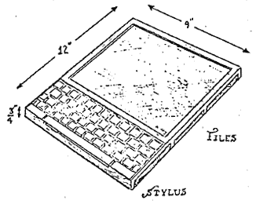

Cultures of programming
Understanding the history of programming through technical artifacts and controversies
Tomas Petricek, University of Kent
tomas@tomasp.net | @tomaspetricek
Learning to live with errors Programming, 2017
Cultures of programming
Draft for HOPL IV
Could this be a book?
Cultures
Introducing cultures of programming
Cultures of programming
Different cultures
- Hacker culture
- Mathematical culture
- Managerial culture
- Engineering culture
- Humanistic culture
When cultures meet
- Arguing about principles
- Contributing to a concept
Hacker culture
Basic assumptions about programming
Programming is learned through practice
Advocate direct access to computer
Exemplars include Spacewar! and HAKMEM
Mathematical culture
Basic assumptions about programming
Programming is a mathematical discipline
Advocate proving programs correct
Exemplars include ALGOL and PLT papers
Managerial culture
Basic assumptions about programming
Programming is industrial production process
Advocate organizational processes
Exemplars include Waterfall and SCRUM
Engineering culture
Basic assumptions about programming
Programming should be an engineering practice
Advocate tools and development practices
Exemplars include TDD and information hiding
Humanistic culture
Basic assumptions about programming
Programming is a creative human activity
Advocate improving the human condition
Exemplars include oNLine System, Sonic Pi
How cultures meet
Controversies and technical artifacts
Controversies and artifacts
Programming controversies
- NATO conference (1969)
- Verification debate (1979)
- Dynabook vs iPad (2010)
- Haskell vs TypeScript (2012)
Programming concepts
- Programming languages
- (The real history of) types
- Testing and error handling
- Object-oriented programming
Technical artifacts
Multi-cultural programming concepts
Programming languages
Language as a machine-independent entity
Hacker culture
EDSAC initial orders and interpretative routines
Mathematical culture
Logic, formal languages and grammars
Managerial culture
Business need for cross-machine compatibility
Types
Types as sets, LCF and a great unification
Managerial culture
Records and business data processing
Mathematical culture
Lambda calculus models of PLs
Engineering culture
Clu and abstract data types
Testing
Professionalization of testing vs. debugging
Hacker culture
Program checkout, debugging and testing
Engineering culture
From demonstration to destruction
Mathematical culture
Designing comprehensive test suites
Managerial culture
Testing in Waterfall vs. testing in TDD
Conclusions
Cultures of programming

What happened
to debugging?
Conceptually similar to '60s
Learned through practice
Hacker culture only
No boundary object to exchange with other cultures?
Cultures of programming
Ways of trusting software systems
Hacker - Trust person making it
Engineering - Rely on tools
Managerial - Rely on processes
Mathematical - Trust formal proofs
Cultures of programming
A useful perspective for history of programming
Mathematization of programming
Rise of software engineering
Interactive programming
Programming with types